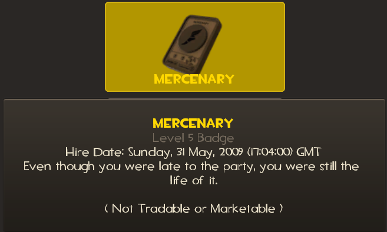

The Internet is Serious Business!
Home > Video Games > PC > Team Fortress 2 > Playing Team Fortress 2 for the First Time
Back in May 2009, when I still maintained an account on YouTube, I was using that site one day and stumbled upon another user's channel, which happened to have Meet the Spy
(which, at the time, had just been released) as the channel's featured video. I was curious, so I watched the video and found it entertaining and interesting; I then wanted to know what Team Fortress 2 was, so I did a Web search and ended up reading about the game on Wikipedia. Although I cannot remember exactly, what probably happened next was that I thought the game looked like fun, but not fun enough that I immediately bought it that day. However, what I do remember without a doubt was that I was at my local Best Buy with my family when I saw the boxed version of Team Fortress 2 in the video games section, and decided to buy it then, on 31 May 2009, a date that's been conveniently saved on my Mercenary medal:

We returned home, and I began to install the game on my Windows XP computer. It was during this installation that I first became aware of Valve's Steam bloatware software, a program that I hated then and still hate now—but that is a different subject for a different page.
After I installed the game, I started it up and waited for it to load the main menu, which looked quite different back then (that video is pretty close to what I remember the main menu looking like at the time). The boxed version of the game I bought came with no instructions other than a card giving basic movement controls, and as I didn't know about the official wiki back then, I was very ignorant of even the basics of the game, which made me rather nervous to play for the first time (it is a multi-player game, and I didn't want the other players to get angry at me for being terrible at it).
Somehow, I managed to find out that there were different game modes; at the time, the only game modes that existed were Control Point, Capture the Flag, Territorial Control, Payload, Payload Race, and Arena. I was certainly intimidated and wanted to choose a simple
game mode, so I ended up playing the Arena mode. I still remember the first map I ever played, which was Watchtower—a good map that, unfortunately, nobody seems to play these days.
Connecting to the game servers took much longer back then: my estimate is that it took well over a minute, while today I can get connected in probably less than 30 seconds. When I finally connected to the server running Watchtower, I had to choose my class. Again I wanted to pick a simple
(in my perception) class, so I chose Soldier (which is funny, because for many years now I very rarely, if ever, play Soldier; he is by far my least-played class).
I don't think I played for very long. I can remember heading into the main tower room as a Soldier and shooting rockets, trying to kill members of the other team. I might have gotten lucky and made one or two kills and assists during this first play session, but I died many times. I cannot remember if I switched classes during this very first session of mine, or if the server changed maps and I stayed to play on the new map, or if I switched servers afterwards; the only thing I can really remember is playing Soldier for some number of rounds on Watchtower. Despite getting very few (if any) kills and dying so much, I still found the game to be fun; this would be the first day of my nearly 12-year history with Team Fortress 2.


 All written materials on this Web site are my own, and all are released under the Do What the Fuck You Want to Public License Version 2.
All written materials on this Web site are my own, and all are released under the Do What the Fuck You Want to Public License Version 2.
This page last modified on 29 March 2021.